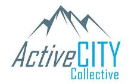
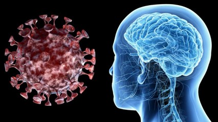
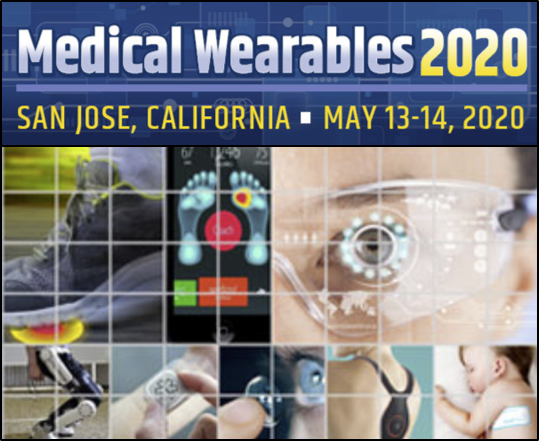
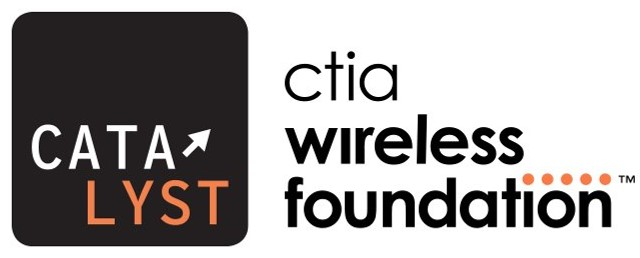
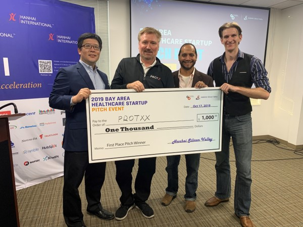

10th Annual Traumatic Brain Injury Conference
June 1-2, 2020 – Washington, DC Join PROTXX CEO John Ralston for a presentation summarizing our 1-year clinical study "Physiological Tremor Sensor Assessment of Sensory Reweighing Following Concussion and During Recovery".
learn more
PROTXX Announces New Partnerships
May 12, 2020 - PROTXX Announces Product Development and Investor Partnerships for Integrated Diagnostics/Therapeutics
learn more

ActiveCITY FutureMaking COVID-19 Forum
April 30, 2020 - Join PROTXX and other Calgary Health Tech Entrepreneurs for an online discussion of challenges and opportunities created by COVID-19.
learn more

PROTXX and COVID-19 Neurological Impairments
April 1, 2020 - Learn more about PROTXX applications for identifying and quantifying potential COVID-19 neurological impairments in patients and healthcare workers.
learn more

PROTXX at Medical Wearables 2020
May 13-14, 2020 - Join PROTXX CEO John Ralston for his presentation “Wearable Technologies for the Management of Degenerative Neurological Conditions”
learn more
MedTech Innovator 2020 Los Angeles
March 2, 2020 - Join PROTXX and other best-in-class medical device and digital health companies working on healthcare solutions for a day of networking with MedTech Innovator partners.”
learn more
Wearables in Health: Value and Investment in Devices
February 27, 2020 - JLABS Toronto, Canada
Join PROTXX and a panel of industry experts, companies, and investors as we debate the promise of a new generation of healthcare solutions that integrate wearable devices and advanced data analysis tools.
learn more

2020 CTIA Wireless Foundation Catalyst Semifinalists Announced
Jan 27, 2020 - PROTXX is excited to be one of the seven semifinalists in the 2020 CTIA Wireless Foundation Catalyst grants program for innovators addressing America’s most pressing health and wellness issues.
learn more
PROTXX Launches Collaborations in Alberta
Jan 14, 2020 - PROTXX Launches Collaboration with Alberta Healthcare and Machine Learning Innovation Ecosystems.
learn more
Sacramento Region Innovation Awards
Nov 7, 2019 – We are excited to announce that PROTXX was named winner in the MedTech category at the 2019 Sacramento Region Innovation Awards. Thank you to everyone who joined us for the awards ceremony on Thursday, Nov 7 at the Crest Theatre in Sacramento.
learn more
Wearable Technology Seminar at University of Calgary
Oct 24, 2019 - Join PROTXX CEO John Ralston, Dr. Lauren Benson from the University of Calgary Sport Injury Prevention Research Centre, and Dr. Lisa Stirling from Garmin’s wearable products team as they discuss wearable technology from the perspective of both academia and industry.
learn more

Hanhai Bay Area Healthcare Startup Pitch Winners
Oct 17, 2019 – PROTXX wins first prize in the Hanhai Bay Area Healthcare Startup Pitch Event and an all-expense-paid business development trip to Shanghai, Wuxi, Nanjing, and Zhuhai.
learn more
Defense TechConnect Innovation Summit & Expo
Visit the PROTXX exhibitor booth at the Defense TechConnect Innovation Summit and Expo on Oct 8-10, 2019 at the Gaylord National Resort & Convention Center, National Harbor, MD.
learn more
2019 Concussion Health Summit
Join PROTXX and leading clinical and sports medicine practitioners for 3 days of presentations, demos, and discussions of the latest knowledge and technology related to diagnosing and treating concussions.
learn more
PROTXX Wins SVIEF-2019 Startup Competition
PROTXX is excited to announce our first place finish in the STAR Startup Competition at the 9th Silicon Valley Innovation & Entrepreneurship Forum (SVIEF 2019), September 7-8, 2019 at the Santa Clara Convention Center.
learn more
2019 TechConnect Defense Innovation Award
PROTXX is honored to be recognized with a 2019 TechConnect Defense Innovation Award, highlighting the potential positive impact that our technology will have for the warfighter and national security.
learn more
SVIEF, September 7-8, Santa Clara, CA
PROTXX is honored to be recognized as a 2019 SVIEF-STAR Top Innovator. Join us on Sept 7-8, 2019 at the Santa Clara Convention Center.
learn more
Sensors Expo & Conference 2019, June 25-27, San Jose, CA
Join protxx ceo john ralston for his invited talk “How to Prototype, Manufacture & Sell a Wearable Medical Device in 2019” on Tuesday, June 25 in the “Innovation on the Edge” session.
learn more
PROTXX pilot study of fall risk prevention in elderly populations
JUNE 17, 2019: PROTXX Inc. today announced results from a pilot study of fall risk stratification and prevention in older populations using the PROTXX Clinic precision balance platform.
Read News Release
Concussion Medical Clinic and PROTXX announce precision balance platform pilot results
JUNE 3, 2019: Rocklin, CA based Concussion Medical Clinic (CMC) and PROTXX announce exciting results from their pilot deployment of the PROTXX Clinic precision balance platform.
READ NEWS RELEASE
PROTXX Medical Advances Leverage Machine Learning and Wearable Sensors
PROTXX TO PRESENT “Signal Classification of Wearable Inertial Motion Sensor Data Using a Convolutional Neural Network.” IEEE BHI/BSN CONFERENCE, CHICAGO, IL, MAY 19-22, 2019.
learn more
PROTXX Publishes Ground-Breaking Precision Balance Research
“Monitoring of postural sway with a head-mounted wearable device: effects of gender, participant state, and concussion.” Medical Devices: Evidence and RESEARCH, MAY 2019: 12; 151–164.
Download article
2019 Industry Showcase: IEEE Biology & Healthcare Informatics
WE ARE EXCITED TO ANNOUNCE THAT PROTXX IS A FINALIST IN THE 2019 INDUSTRY SHOWCASE AT THE IEEE BHI/BSN CONFERENCE IN CHICAGO, MAY 19-22, 2019.
learn more
UCSF Rosenman Innovators 2019
WE ARE EXCITED TO ANNOUNCE THAT PROTXX HAS BEEN SHORTLISTED TO PRESENT TO THE JUDGING PANEL FOR THE 2019 UCSF ROSENMAN INNOVATORS ON MAY 15, 2019 AT THE UCSF MISSION BAY CAMPUS IN SAN FRANCISCO.
learn more
Stanford Sports Concussion Summit
PREVIEW OUR LATEST CLINICAL CONCUSSION AND SUB-CONCUSSIVE HEAD INJURY STUDIES AND DEMO THE PROTXX WEARABLE SENSOR. HOSTED BY STANFORD MEDICINE AT THE ARRILLAGA FAMILY SPORTS CENTER, APRIL 27, 2019.
learn more
Stanford GSB Sports Innovation Conference
VISIT THE PROTXX DEMO TABLE AND HEAR US PRESENT ALONG WITH A FULL DAY OF OTHER EXCTING SPORTS INNOVATION EXPERTS AND VISIONARIES AT THE STANFORD GRADUATE SCHOOL OF BUSINESS, FEB 27, 2019.
learn more
Wearable Technologies Europe 2019
PROTXX CEO JOHN RALSTON WILL PRESENT AN INVITED TALK AT THE WEARABLE TECHNOLOGIES EUROPE CONFERENCE, FEB 3-6, 2019, IN MUNICH, GERMANY
learn more
AI in Healthcare at JP Morgan 2019
LEARN HOW PROTXX IS COMBINING WEARABLE DEVICES AND AI TO REDUCE NEUROVESTIBULAR AND ORTHOPEDIC INJURY RISKS AND IMPROVE RECOVERY OUTCOMES, JAN 9, 2019 IN SAN FRANCISCO
learn more
Wearable Technologies Australia 2018
JOIN PROTXX CEO JOHN RALSTON FOR HIS INVITED TALK AT THE WEARABLE TECHNOLOGIES AUSTRALIA CONFERENCE, OCT 3-4, 2018, IN MELBOURNE AUSTRALIA
learn more
Medical Fair Asia Medicine + Sports Conference 2018
Protxx ceo dr. John ralston will be giving an invited talk on August 29th at the 2018 medical fair asia medicine + sports conference in Singapore
learn more
Medical Sensors Design Conference 2018
Join protxx ceo dr. John ralston for his invited talk at the 2018 medical sensors design conference on June 25 and 26 in San Jose, CA
learn more
PROTXX Wins NBA Sacramento Kings CAPITALIZE Grand Prize
APRIL 5, 2018 - PROTXX HAS BEEN SELECTED AS THE WINNER OF THE NBA SACRAMENTO KNGS CAPITALIZE CONTEST. THANK YOU TO THE JUDGES AND COMPETITION.
learn more
Join PROTXX on the HaneyBiz Project show
Protxx's talk with HaneyBiz host Mark Haney will appear on Facebook Live at 10:30 a.m., Thursday, April 12, and then air on Talk 650 KSTE and via the iHeart digital platform at 9 a.m., Saturday, April 28
Watch on YouTube
2018 Medical Wearables Conference
Protxx CEO John Ralston to present invited talk on "Neurological and orthopedic applications of precision MEMS sensors" at the 2018 Medical Wearables Conference, Santa Clara, CA, May 16-17, 2018
learn more
Startup Competition Winner - 2018 MIT Sloan Sports Analytics Conference
Congratulation to the Protxx team on winning the Startup Competition at the 12th Annual MIT Sloan Sports Analytics Conference, February 23-24, 2018 – Boston Convention and Exhibit Center, Boston, MA
learn more
IEEE Sensors 2017
Come and see Protxx at the IEEE Sensors 2017 Conference, October 29 - November 1, 2017 – Scottish Events Campus, Glasgow, Scotland
learn more
IEEE Brain Sensors Workshop
Join Protxx at the IEEE Brain SENSORS Workshop, November 2, 2017 – Glasgow, Scotland
learn more
Concussion Health Summit Winner
Congratulations to Protxx for winning the Case Study Competition and presenting our research on "Cumulative Head Impact Trauma over a Season of Collegiate Women’s Soccer" at the 2017 Concussion Health Summit, July 28-29, 2017, Columbus, Ohio
learn more